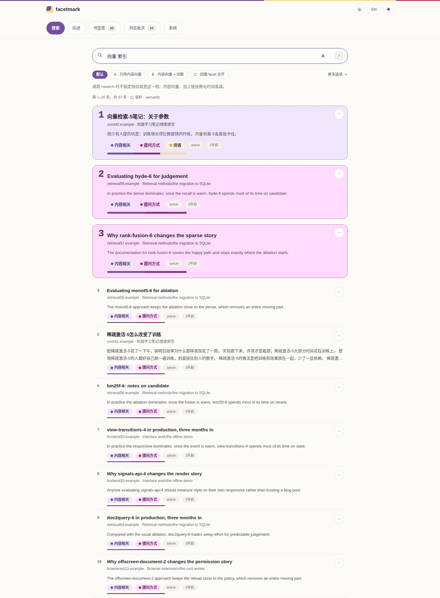
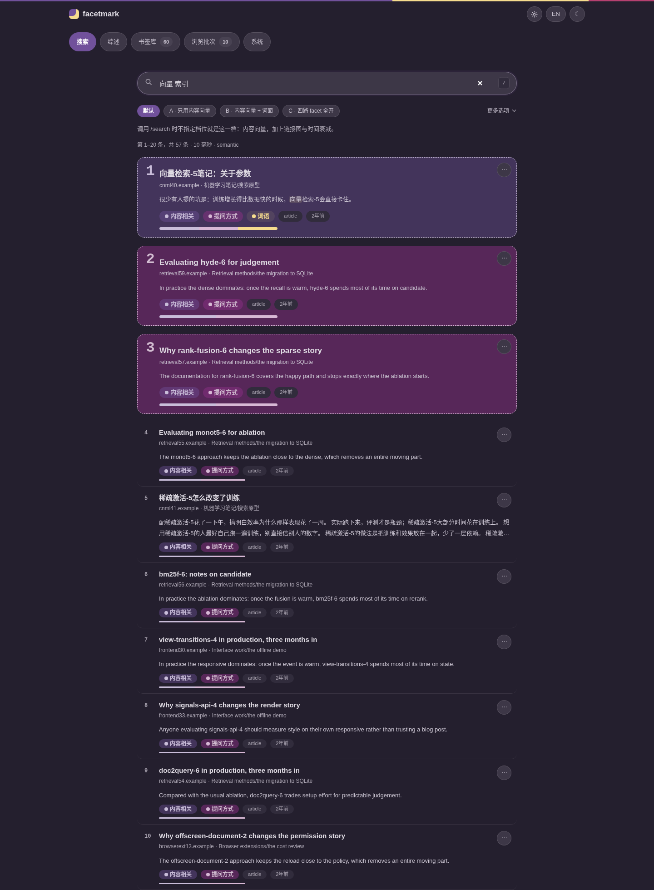
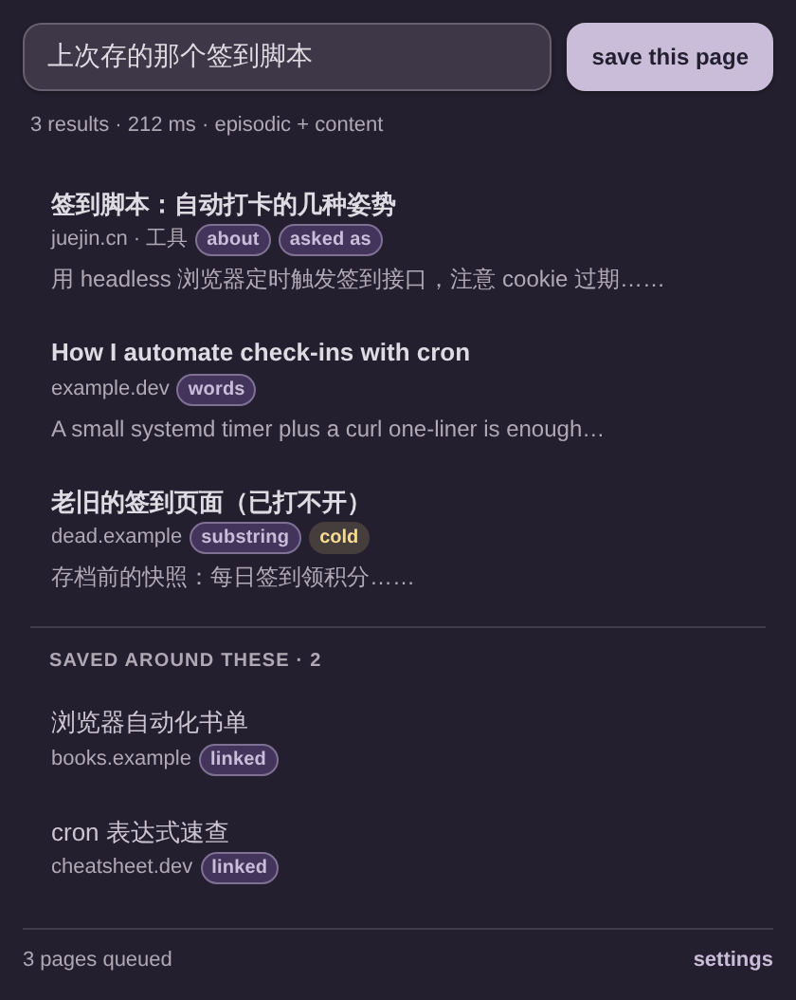
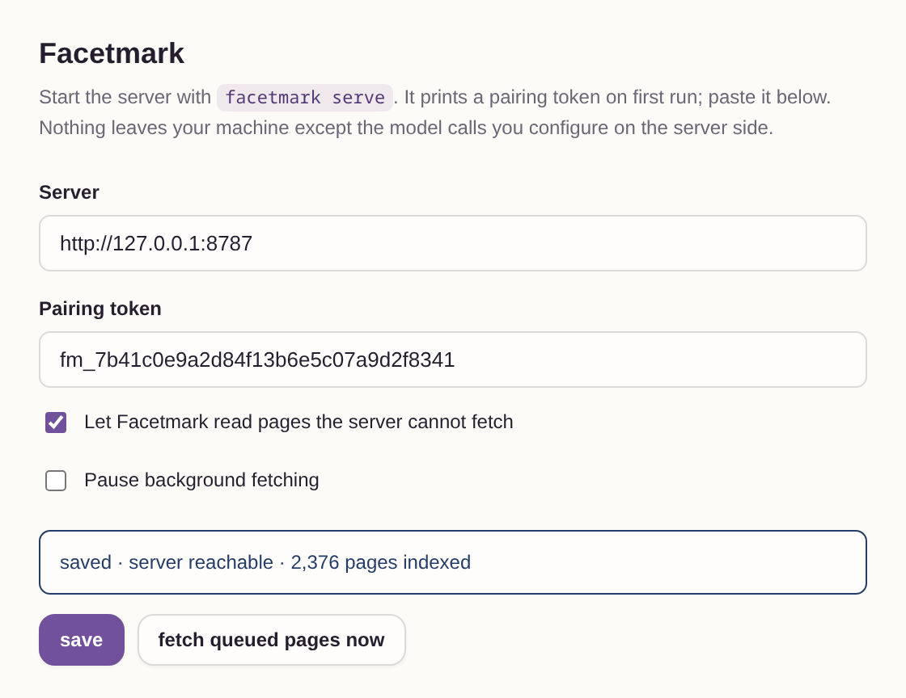

内容型
你记得里面的词
页面里写了 sqlite-vec、写了 shard，你想把它找回来。这种任何像样的索引都能干。
「sqlite-vec latency shard recall」
0.959
Recall@5
你存过它。你大概记得它讲什么，或者记得当时为什么想要它，或者记得那个下午你还在看别的什么 —— 就是不记得标题。facetmark 把这三件事全部建成索引，一起拿来搜，全部落在你自己机器上的一个 SQLite 文件里。
facetmark demo 的真实输出，它会离线造一个 60 页的合成书签库。provider 是 mock，所以这是一次管路体检，不是质量度量 —— mock 是把文本哈希成向量的。分数列看上去没排序，是因为名次来自重排阶段，而分数是融合分，重排故意不去覆盖它。它要解决的问题
文件夹树能回答第一种。后两种它一句话都接不上，所以你最后总是在翻历史记录。这三类就是整套评测用的三种查询类型，后面的数字是它们在一个真实的 1,700 条书签库上真实跑出来的 Recall@5。
页面里写了 sqlite-vec、写了 shard，你想把它找回来。这种任何像样的索引都能干。
「sqlite-vec latency shard recall」
你知道它解决了什么问题。你从来就没记住那个产品叫什么，或者已经忘了。文件夹名字在这里一点忙也帮不上，内容面就是为这一类存在的。
「那个讲把向量和其他数据放在一起、不用再起一个服务的东西」
「就是我看 qdrant 的那个下午。」facetmark 会重建保存会话和一张链接图来回答它 —— 而它依然是短板。放在这里是因为它是真的，不是因为它好看。
「和 qdrant 那篇差不多时候存的另一个」
479 条查询，一个真实库，A 档。完整协议和剩下的表在实测页。
它是怎么工作的
facetmark 在同一个库上建了四套互相独立的索引，可以用 RRF 把它们融合起来。然后它把这个融合实测了一遍，发现还不如单拿最好的那一个面，所以出厂默认只开一个面。另外三个还在，还有测试，一个参数就能打开 —— 只是默认不开，因为数字说不该开。
| 面 | 索引的是什么 | 回答什么样的问题 | 默认 |
|---|---|---|---|
| 词面 两个 FTS5 索引 | 标题、URL、正文的字符三元组和词段。 | 精确字符串、ID、代码、报错信息，以及没有空格可分的中文。 | 关 融合时输了 5.4pp |
| 内容面 稠密向量 | 页面正文抽取后的嵌入，不是标题的。 | 换说法。词忘了、意思还在的那种。 | 开 W1 赢家，0.643 |
| 意图面 生成的查询 | 模型为这个页面写的候选问法，再用「能不能把这页捞回来」过滤一遍。 | 你以后会怎么开口找它。 | 关 只有 38% 的意图站得住 |
| 上下文面 会话与图 | 保存会话聚类、域名结构，以及全库的链接图。 | 「我存那个的时候还顺手存了哪些？」 | 图扩展开 情景门关 +2.09pp / −18.83pp |
这四个结论每一个都对应实测页上一份协议、一套查询集和一个置信区间。
管线
有颜色的阶段是出厂默认真的会跑的。灰色的是写了、测了、然后关掉的。每一个索引阶段都是幂等的并且带指纹，所以 facetmark index 只会重做输入变了的那部分。
四路并行默认只开一路
从融合这一步分出去
默认真正走的路径写好了、接好了，默认关着
bookmark → fetch → content → enrich（摘要、主题、实体、要点）→ embed → intents → 过滤 → sessions → edges。
富化按正文哈希计算；嵌入按重建后的嵌入文本计算 —— 所以一个和自己文本对不上的向量会被发现，而不是被相信。--force 两个都不看。
从融合结果往外走一跳，作为单独一组返回，不混进排名里。实测 +2.09pp，10 胜 0 负，9 ms。
你要打开的那个页面
127.0.0.1:8787/appfacetmark serve 会打印一个地址。打开它，你就拿到了搜索框、和扩展里同一套结果标记，外加一个告诉你索引里到底有什么的第二个视图。不用装，也不用编译 —— 这个页面就装在 Python 包里，由同一个进程发出来。


令牌来自一条只在调用方和请求里写的地址两者都是回环地址时才回答的路由，所以在你自己机器上没有什么要复制的。换个地方，页面会让你粘贴一次。
空的书签库会把导入命令打出来。有书签但没有向量，就打 facetmark index。搜不到东西而抓取队列还排着，它会直接告诉你，而不是甩给你一个空列表让你猜。
顶栏一个开关，下次来还记得。浅色、深色，或者跟随系统。/ 聚焦搜索框，上下键走结果，Esc 清空。
在浏览器里
Manifest V3。主机权限只有 http://127.0.0.1:8787/* 和 http://localhost:8787/*。它只访问你自己的机器，用一个配对令牌握手，并且从不写你浏览器的书签库。



facetmark health。这些是用 mock 数据渲染的界面预览，不是真实库的截图 —— 真的截一张，等于把某个人的浏览历史贴到公开网页上。
证据
这个项目有意思的部分不是那些成功的功能，而是那些写完了、预注册了、测完了、然后被关掉的 —— 包括一个已经发出去的。
三条标准在跑之前就写好了。三条全没达到。融合付出了 5.4 个百分点的 Recall@5，并且把查询变慢了 3.5 倍 —— p50 从 148 ms 到 526 ms。四面融合的默认当天就撤了。
那一轮里活下来两个，现在都在跑：图扩展作为单独一组返回（+2.09pp，10 胜 0 负，p=0.0019），以及重排对 Recall@1 的提升（+4.80pp，CI95 [+1.46, +8.35]）。
然后是情景门。它在自己的 holdout 上赢了（+3.09pp，19 胜 0 负，p=3.8e−6）并且发了出去。之后另建的 361 条探针集问了另一个问题 —— 它在不该触发的查询上触发了会怎样？答案是 −18.83pp，3 胜 71 负。默认回滚了。
快速开始
如果你用的是 Chromium 系浏览器 —— Chrome、Edge、Brave、Vivaldi、Chromium、Opera —— 连导出都不用。facetmark import 不带参数时会自己找到浏览器配置文件并读它。
pip install facetmark
facetmark import # 自动找浏览器，只读
facetmark index # 抓取、富化、嵌入、会话、边
facetmark search "那篇讲把向量存在 sqlite 里的"手边没 API key？facetmark demo 会离线造一个 60 页的合成库并搜它，让你先看看输出长什么样，再决定要不要投入。
sentence-transformers，而且只有你想本地跑嵌入时才需要。facetmark serve 之后用浏览器扩展、HTTP API、或者 MCP 客户端。接口
facetmark serve 会在 /app 上开一个搜索页。搜索加书签库概览，中英文、深浅色都能切。这是唯一一个除了 facetmark 本身什么都不用装的入口。
16 条命令。search 有 --explain 可以打印命中的是哪个面，--config 可以按名字跑任何一个消融档。
facetmark serve 监听 127.0.0.1:8787。27 条路由，其中四条公开 —— 根路径、健康检查，以及本地页面加载自己需要的那两条；凡是碰到书签库的都要配对令牌。
facetmark mcp 在 stdio 上说 MCP。9 个工具、3 个资源，Claude Desktop 可以直接搜你的库、读一次保存会话。
MV3。地址栏关键字 fm、Ctrl+Shift+K、一键保存并进本地索引队列。
一个搜索提供者插件，把 facetmark 接到 karakeep 自己的搜索框后面。协议格式由一个回放测试钉死。
常见问题
两件东西会离开你的机器，两件都归你控制。页面抓取会去你自己存的网站。富化和嵌入会去你自己配的那个 OpenAI 兼容端点 —— 可以是 OpenAI，也可以是你桌子下那台机器。
把 FACETMARK_EMBED_BACKEND=local 打开、FACETMARK_API_KEY 留空，除了抓页面之外就什么都不出去了。没有一个叫 facetmark 的服务器在等着收数据。也没有账号。
不会。导入是单向只读。导入器打开浏览器配置里的 Bookmarks 文件或者你导出的 HTML，读完就关。代码里没有任何一处往浏览器配置里写东西。
facetmark 这边也不删。衰减层只会把陈旧页面往后排，从来不删行。
能，会差，而且它会告诉你差在哪。不接模型，你保留两个词面、整套保存会话和域名图。你失去内容面 —— 就是测得最好的那个 —— 和意图面。
折中方案：只跑一个本地嵌入模型支撑内容面，不接 chat 模型。你失去摘要和生成意图，保住换说法搜索。
钱主要花在富化：大致每页一次小的 chat 调用。用便宜模型的话，1,700 页是几毛钱的事。嵌入更便宜，本地跑就是免费。
但壁钟时间的大头是抓页面，不是模型。facetmark 遵守 robots.txt，并且按域名给自己限速 —— 这是故意的。--no-fetch 只索引标题，几秒钟就完。
因为四面融合在 479 条真实查询上被测了，结果比单独用内容面低 5.4 个百分点的 Recall@5，延迟还高 3.5 倍。
机制也写下来了：平权重的 RRF 下，两个弱面碰巧的一致（0.0279）能投赢一个强面的确定（0.0164）。四个面都还在，都还有测试。--config C 一下就全打开了，你可以自己看。
不是。它是一个带着评测台架的工具，而台架才是重点。每一个改过的默认值背后都有一份协议、一条预注册的标准和一个置信区间，而其中四份协议杀掉了它们自己要证明的那个功能。
最大的缺口写在实测页上：到目前为止所有查询集都是作者自己写的 —— 这是再多 bootstrap 也修不了的那一个偏差。
边界
导入从不写回。你的文件夹树还是你的。
冷层只降权。它不删行，而且 facetmark health 会告诉你它认为哪些死了、为什么。
一个 SQLite 文件，任何 SQLite 工具都能打开。就算你不用 facetmark 了，数据也还读得出来。
遵守 robots.txt，单域名并发封顶 2，同一主机两次请求之间有最小间隔，UA 里写清楚自己是谁。
没有一套提前冻结的查询集，就不改默认值。